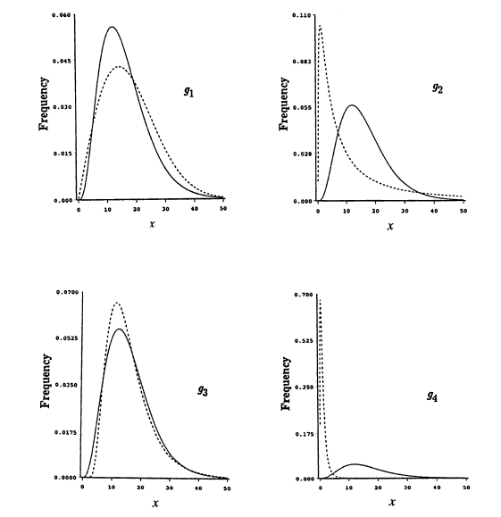
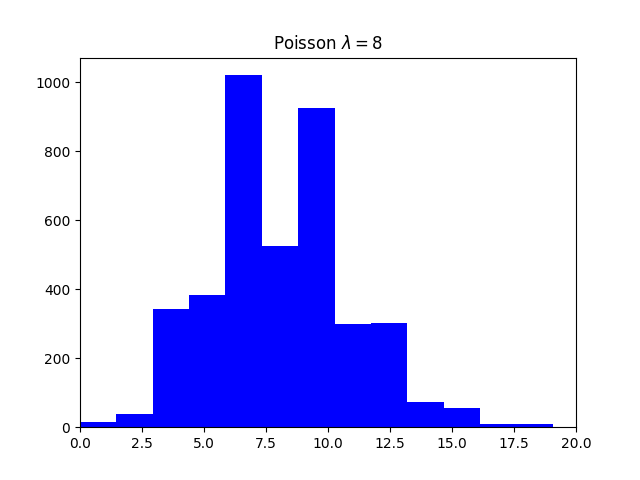
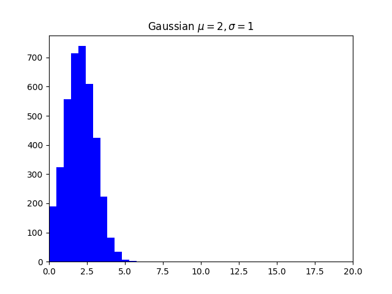
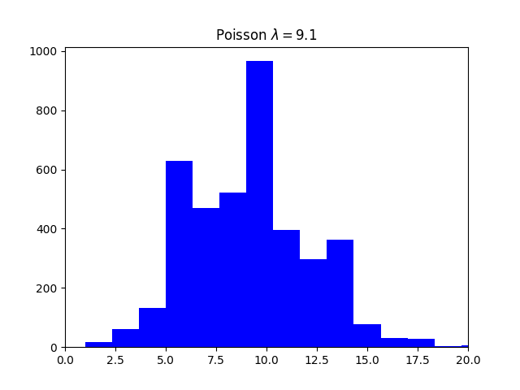
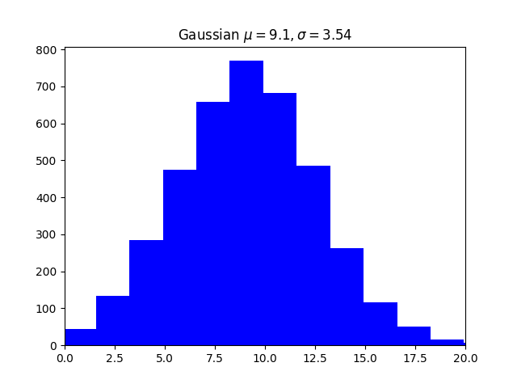
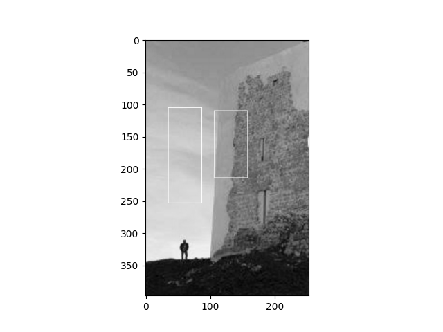
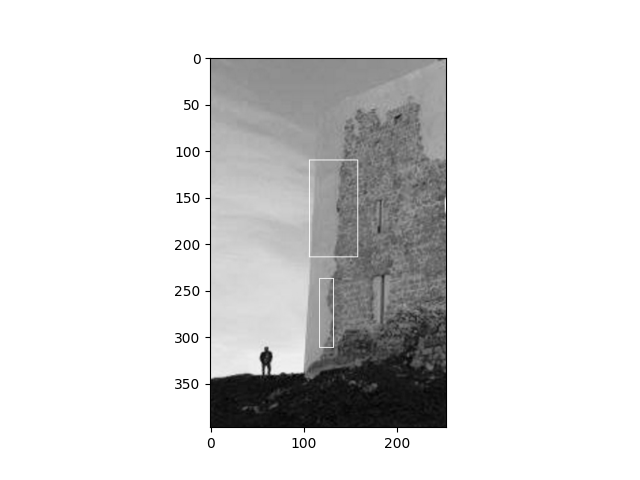

Kullback-Leibler (KL) Mesafesi
İki olasılık dağılımının arasındaki uyumsuzluğu (discrepancy) hesaplayan bir ölçüt KL mesafesidir. Gerçi bu ölçüt tam tanımıyla mesafe değil, $f$ ile $g$ arasındaki mesafe $g$ ile $f$ arasındaki mesafeden farklı olabiliyor, KL mesafesi üçgen eşitsizlik (triangle inequality) kavramını takip etmiyor. Tam tanımlamak gerekirse KL bir yönsel (directed) mesafedir [2].
Kullback-Leibler aslında 1951'de bir enformasyon ölçütü bulmuş oldular, bu ölçüt ilginç bir şekilde fizikçi Boltzmann'ın bir sistemdeki düzensizliği ölçen entropi kavramının negatif değerli halidir. Ayrıca KL mesafesi Enformasyon Teorisi'ni keşfeden Shannon'un enformasyon tanımının da bir uzantısıdır, bu sebeple bazen KL mesafesine "izafi entropi" ismi de veriliyor.
Tüm bu kavramların tabii ki İstatistik'teki model seçme uygulamalarıyla yakın alakaları var. Diyelim ki elimizde iki dağılım var, $f$ yaklaşmaya çalıştığımız bir model, $g$ ise onu yaklaşık olarak temsil etmeye uğraşan başka bir model, $\theta$ parametreleri üzerinden tanımlı, yani $g(x|\theta)$. $\theta$ çoğunlukla veriden kestirilmeye çalışılır, $\hat{\theta}$ elde edilir, o zaman $g(x|\hat{\theta})$ olur. Bu iki dağılım / model arasındaki KL mesafesi
$$ I(f,g) = \int f(x) \log \bigg( \frac{f(x)}{g(x;\theta)} \bigg) \mathrm{d} x$$
(çoğunlukla çok boyutlu) entegrali ile hesaplanır. Kullback-Leibler $I(f,g)$ notasyonunu "$g$, $f$ yerine, onu yaklaşık olarak temsil edecek şekilde kullanıldığına kaybedilen enformasyon" şeklinde kullandılar. Tabii ki uygulamalarda bu kayıbın olabildiği kadar az olmasını isteriz, yani $I(f,g)$'i $g$ üzerinden minimize etmek önemli bir uygulama alanı.
Ayrıksal dağılımlar durumunda üstteki formül,
$$ I(f,g) = \sum_{i=1}^{k} p_i \log \bigg( \frac{p_i}{\pi_i} \bigg) $$
Burada $k$ değişkeni rasgele değişkenin alabileceği $k$ farklı değeri temsil eder, $i$'inci olayın olma olasılığı $p_i$'dir, $\pi_1,..,\pi_k$ ise gerçek dağılımı yaklaşık olarak temsil etmeye uğraşan modeldir. Ayrıksal durumda $0 < p_i < 1, 0 < \pi_i < 1$, ve $\sum p_i = 1 = \sum \pi_i = 1$.
Formüllere yakından bakarsak onların birer beklenti hesabı olduğunu görebiliriz, $\int f(x) ( \cdot ) \mathrm{d} x$ şablonundaki formüllerin beklenti hesabı için kullanıldığını biliyoruz. Ayrıksal durumda $\sum_{i=1}^{k}p_i( \cdot ) $, ve bu beklenti iki dağılımın birbirine olan oranının negatifinin beklentisi, yani bu oranın ortalaması. Bu kavramın çıkışı çok derin ve temel, Boltzmann'ın 1877'de, Shannon'un sonra buldukları ile derin bağlantılar var.
Kabaca tarif etmek gerekirse, bir dağılımın içerdiği enformasyon onun negatif log'udur, iki dağılım arasındaki mesafe için negatif log'ların farkını alırız, ki fark cebirsel olarak bölümün log'u olarak tek bir log altında gruplanabilir, ve mümkün tüm sayılar üzerinden bu farkların beklentisini alırsak üstteki entegral (ya da toplam) formülünü elde etmiş oluruz.
KL mesafesi her zaman pozitiftir, tek bir durum haricinde, eğer $f,g$ eşitse - o zaman $I(f,g) = 0$.
Bir örnek üzerinde görmek gerekirse, diyelim ki $f$ 2 parametreli bir Gamma dağılımı, $\alpha=4,\beta=4$. Şimdi bu modeli yaklaşık olarak temsil etmeye uğraşan 4 tane seçeneği görelim, Weibull, lognormal, ters Gaussian, ve F dağılımı.
\begin{array}{cc} Yaklaşık Model & $I(f,g_i)$ \\ \hline \\ Weibull ($\alpha=2,\beta=20$) & 0.04620 \\ Lognormal ($\theta=2,\sigma^2=2$) & 0.67235 \\ Ters Gaussian ($\alpha=16,\beta=64$) & 0.06008 \\ F dağılımı ($\alpha=4,\beta=10$) & 5.74555 \end{array}
Görüldüğü gibi Weibull en yakın olan (yani yaklaşık temsil sırasında en az enformasyon kaybeden o). Lognormal 3. sırada, F dağılımı en uzak olanı.

Bir başka örnek için Testlere Devam yazısındaki araba sayım verisine bakalım. Şimdi ham veriye en uygun olan dağılımı bulmaya çalışacağız.
import pandas as pd
df = pd.read_csv('../stat_tests2/vehicles.csv',header=None)
df.hist(bins=13)
plt.savefig('stat_kl_02.png')

Veride Poisson görünümü var. Eşit aralıklarda yapılan sayımların Poisson dağılımını takip etmeye meyilli olduğunu biliyoruz. Bu tezi kontrol edelim. Eğer, diyelim, Possion ve Gaussian arasında seçim yapacak olsak, bu seçimi KL mesafesi üzerinden yapabilirdik. Her iki durumda da dağılım parametrelerini veriden tahmin ediyor olurduk,
print np.float(df.mean()), np.float(df.std())
9.09433962264 3.54166574177
Poisson durumunda ortalama hesabı $\hat{\lambda}$ için, Gaussian'da ise ortalama ve standart sapma $\hat{\mu},\hat{\sigma}$ için kullanılırdı.
Altta hem verinin hem de hipotez dağılımlardan üretilmiş rasgele sayıların histogramlarını hesaplıyoruz. Not: Aslında ham verinin histogramından sonra histogram kutularının (bins) sınırlarına bakarak Poisson ve Gaussian analitik dağılımlarının oraya tekabül eden yoğunluklarını analitik çağrılar ile bulabilirdik, fakat kolay yolu (!) seçtik, analitik dağılımlar için de rasgele sayı üretiyoruz, hem ham veri hem analitik durum için histogram hesaplıyoruz.
import scipy.stats
s = 4000
b = 15
r1 = scipy.stats.poisson.rvs(mu=8, size=s)
plt.hist(r1, bins=b,color='b')
plt.title('Poisson $\lambda = 8$')
plt.xlim(0,20)
plt.savefig('stat_kl_04.png')
plt.figure()
r2 = scipy.stats.norm.rvs(2, 1, size=s)
plt.hist(r2, bins=b,color='b')
plt.title('Gaussian $\mu = 2,\sigma=1$')
plt.xlim(0,20)
plt.savefig('stat_kl_06.png')
plt.figure()
r3 = scipy.stats.poisson.rvs(mu=9.0943, size=s)
plt.hist(r3, bins=b,color='b')
plt.title('Poisson $\lambda = 9.1$')
plt.xlim(0,20)
plt.savefig('stat_kl_07.png')
plt.figure()
r4 = scipy.stats.norm.rvs(9.1, 3.54, size=s)
plt.hist(r4, bins=b,color='b')
plt.title('Gaussian $\mu = 9.1,\sigma=3.54$')
plt.xlim(0,20)
plt.savefig('stat_kl_08.png')
 
 
Şimdi veri ve tüm müstakbel analitik yoğunluklar arasında KL mesafelerini hesaplayalım,
def kl(p, q):
return np.sum(p * np.log(p / q))
b = range(0,30)
eps = 1e-5
dh = np.histogram(df, bins=b, density=True)[0]+eps
h1 = np.histogram(r1, bins=b, density=True)[0]+eps
h2 = np.histogram(r2, bins=b, density=True)[0]+eps
h3 = np.histogram(r3, bins=b, density=True)[0]+eps
h4 = np.histogram(r4, bins=b, density=True)[0]+eps
print 'Poisson lambda = 8', kl(h1, dh)
print 'Gaussian mu = 2,sigma=1', kl(h2, dh)
print 'Poisson lambda = 9.1', kl(h3, dh)
print 'Gaussian mu = 9.1,sigma=3.54', kl(h4, dh)
Poisson lambda = 8 0.14722344735
Gaussian mu = 2,sigma=1 6.39721632939
Poisson lambda = 9.1 0.133099166073
Gaussian mu = 9.1,sigma=3.54 0.200156046018
En yakın olan Poisson $\lambda=9.1$ olarak gözüküyor.
Çok Boyutlu Dağılımlar
Eğer bir dijital görüntü üzerinde çalışıyorsak, o resimdeki piksel değerlerinin de bir "dağılımı" olduğunu düşünebiliriz. Yani resmi, ya da resmin bir bölgesini bir teorik dağılımdan "üretilmiş" bir örneklem olarak görmek mümkün. Bu dağılımı çok boyutlu histogram alarak yaklaşık olarak hesaplayabiliriz. Eğer iki farklı resim bölgesini bu şekilde belirtirsek, bu iki dağılımı KL mesafesiyle karşılaştırabililiriz, ve böylece görüntüsel olarak iki bölgeyi karşılaştırabiliriz.
from PIL import Image, ImageDraw
def draw_boxes_color(bs,imfile):
im = Image.open(imfile).convert('HSV')
arr = np.asarray(im)
draw = ImageDraw.Draw(im)
colors = ['magenta','green','white','red','yellow']
for i,b in enumerate(bs):
fr = b[0]; to = b[1]
bnew = [(fr[0],arr.shape[0]-fr[1]),(to[0],arr.shape[0]-to[1])]
draw.rectangle(bnew,outline=colors[i])
plt.imshow(im)
def get_pixels(box, im):
arr = np.array(im)
(yw,xw,d) = arr.shape
(bx1,by1) = box[0]; (bx2,by2) = box[1]
by1 = yw-by1; by2 = yw-by2
x1 = min(bx1,bx2); x2 = max(bx1,bx2)
y1 = min(by1,by2); y2 = max(by1,by2)
arr = arr[y1:y2, x1:x2, :]
return arr
box1 = [(35,144),(87,292)]
box2 = [(106,183),(158,287)]
box3 = [(117,86),(132,160)]
f = '../../vision/vision_50colreg/castle.png'
draw_boxes_color([box1,box2],f)
plt.savefig('stat_kl_03.png')
draw_boxes_color([box2,box3],f)
plt.savefig('stat_kl_05.png')
 
Renklerin HSV kodlamasını kullanalım, o zaman her piksel kordinatında 3
değer olur. Bu durumda histogram almak demek çok boyutlu histogram
demektir, üç boyut için sırasıyla 8,8,4 tane kutu tanımlarsak, 256 tane
kutu elde ederiz. Bu kutuları numpy.histogramdd ile hesaplarız, KL
karşılaştırması için kutuları düz vektör haline getirebiliriz -KL hesabında
her iki tarafın birbirine tekabül eden kutuları kullanıldığı sürece problem
yok- ve böylece nihai hesap yapılır.
def box_kl_dist(b1,b2,im):
im = Image.open(f).convert('HSV')
arr1 = get_pixels(b1, im)
r = [(0,255),(0,255),(0,255)]
arr1 = np.reshape(arr1, (arr1.shape[0]*arr1.shape[1],3))
H1, edges = np.histogramdd(arr1, bins=(8, 8, 4), normed=True, range=r)
H1 = np.reshape(H1, (H1.shape[0]*H1.shape[1]*H1.shape[2], 1))
arr2 = get_pixels(b2, im)
arr2 = np.reshape(arr2, (arr2.shape[0]*arr2.shape[1],3))
H2, edges = np.histogramdd(arr2, bins=(8, 8, 4), normed=True, range=r)
H2 = np.reshape(H2, (H2.shape[0]*H2.shape[1]*H2.shape[2], 1))
return kl(H1+eps, H2+eps)
print box_kl_dist(box1, box2, f)
print box_kl_dist(box2, box3, f)
7.55231179178e-06
7.30926985663e-07
İkinci karşılaştırmada mesafe daha yakın duruyor; hakikaten de resimlere bakarsak ikinci resimdeki bölgelerin renksel olarak birbirine daha yakın olduğunu görebiliyoruz.
Kaynaklar
[1] Cover, Elements of Information Theory
[2] Burnham, Model Selection and Inference
Yukarı